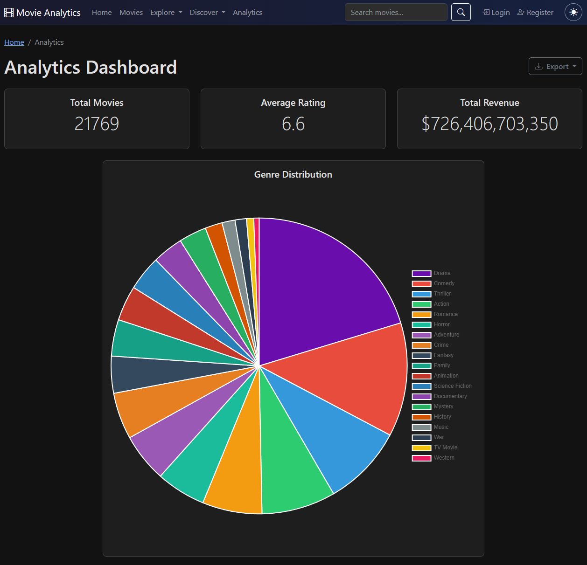

Projects

Movie Analytics Dashboard
Full-stack movie discovery platform pulling live TMDB data, with a custom hidden-gems scoring engine.
Live · Python · Flask · PostgreSQL · TMDB API
Rust Rush, a tower defense game
Real-time browser tower defense with a server-authoritative Go backend running at 60 FPS.
Live · Go · React · WebSockets · SQLite
Self-hosted infrastructure
A home server running two dozen self-hosted services behind a reverse proxy and tunnel, no ports exposed.
Live · Unraid · Docker · Caddy · Cloudflare Tunnel
Media automation stack
1,737 movies and 164 shows, each added with about thirty seconds of work.
Live · Deluge · Prowlarr · Radarr · Sonarr · rclone
Calibre and Kindle setup
An ebook pipeline where finding the book is the only manual step.
Complete · Calibre-Web Automated · Kindle